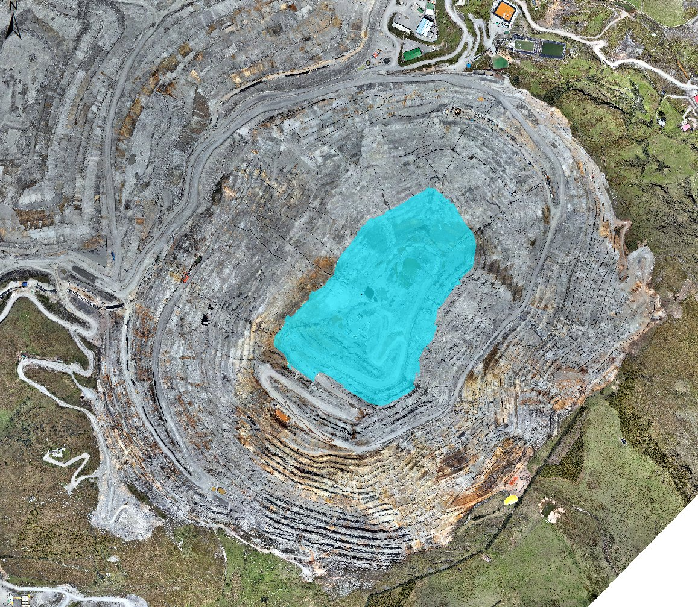

Piezómetros en el mapa

Topografía
Curvas
Nivel de agua
Ortofoto y curvas de nivel c/1 m del CAD CN_Z1_Z2_020826_1M. La ortofoto ya muestra el espejo de agua a la fecha del vuelo; “Pintar nivel” dibuja el espejo a la cota que indiques (entre las curvas del tajo) con su área y volumen aproximados.
Piezómetros
Rango de fechas
| ID | Tipo | Ubicación | Último nivel (msnm) | Fecha | Días sin dato | Tendencia (30d) | Contención | Δ vs cota contención (m) |
|---|
Clic en una fila para abrir su serie histórica en la pestaña Análisis Temporal.